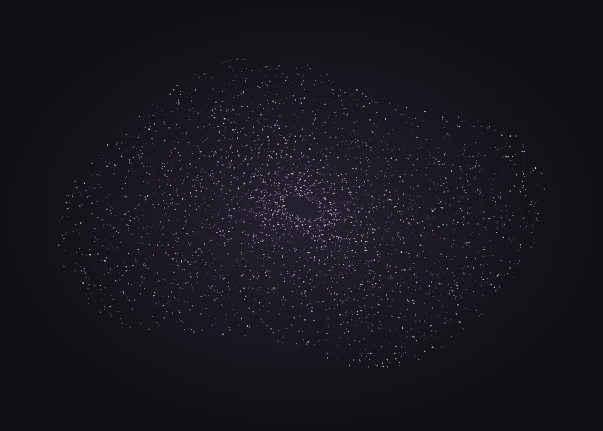

PROFILO / CONTATTI
Michele Lorusso
Compositore elettroacustico e visual artist.

STUDIO VISIVO / IMMAGINE PROVVISORIA
BIOGRAFIA
Tra suono,
spazio e immagine.
Una pratica artistica all’intersezione tra composizione elettroacustica, elaborazione del suono e visual art.
La biografia completa sarà inserita qui: formazione, percorso artistico, collaborazioni e una selezione di esperienze rilevanti.
CV e press kit da aggiungere
CONTATTI
Let’s talk.
Commissioni, collaborazioni artistiche,
ricerca e informazioni sui lavori.
- Indirizzo da inserire
- SoundCloud
- Profilo da inserire
- YouTube
- Canale da inserire
- GitHub
- Profilo da inserire